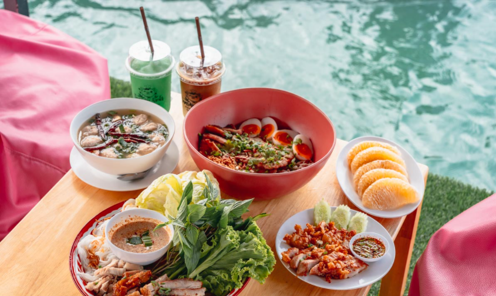

<div class="container" fxLayout="column" fxFlex>
    <mat-card fxFlex fxLayout="column">
        <mat-toolbar color="primary" style="height: 100px;">
            <span class="text-page"><strong>โคตรหมูริมน้ำ</strong></span>
        </mat-toolbar>
        <div fxLayout="row" fxLayoutAlign="center center" fxFlex>
            <div fxFlex="50" fxLayout="column">
                <mat-card fxLayoutAlign="center center"></mat-card>
            </div>
            <div fxLayout="column" fxFlex="50">
                <div fxFlex="25" fxLayout="row">
                    <mat-card></mat-card>
                    <mat-card></mat-card>
                </div>
                <div fxFlex="25" fxLayout="row">
                    <mat-card></mat-card>
                    <mat-card></mat-card>
                </div>
            </div>
        </div>
        <div fxLayout="column" fxFlex="50">
            <mat-card>
                <div fxLayout="column">
                    <mat-toolbar color="primary">
                        <span><strong>รายละเอียดเกี่ยวกับค่าเฟ่</strong></span>
                    </mat-toolbar>
                    <div>
                        <p><strong class="detail-Pros">จุดเด่น</strong></p>
                        <p>
                            ร้านโคตรหมูริมน้ำถือได้ว่าเป็นร้านอาหารผสมผสานคาเฟ่สไตล์ไทย
                            ด้วยความที่เป็นซุ้มแพที่หลังคามุงด้วยจากให้ได้เลือกนั่งและด้านข้างมีเปลตาข่ายให้ได้นั่งชิลล์ถ่ายรูป
                            อีกทั้งยังมีมุมถ่ายรูปเก๋ๆอีกหลากหลายมุม เช่น มุมชิงช้า
                            มุมริมน้ำที่ให้เราได้นั่งหย่อนขาและถ่ายรูปแบบชิคๆหรือว่าจะเป็นมุมฟาร์มที่สามารถให้อาหารสัตว์อีกด้วยได้ค่ะ
                            สำหรับเมนูเด็ดในร้านจะโดดเด่นในเรื่องหมู เช่น เมี่ยงโคตรใหญ่ โคตรหมูชามใหญ่ ทอดมันโคตรหมู
                            เป็นต้นค่ะ พอนั่งรับประทานอาหารได้สักพักก็จะมีลุงพายเรือมาขายผลไม้
                            และอาหารประจำท้องถิ่นถือได้ว่าได้ฟีลตลาดน้ำแบบสุดๆ
                            ทำให้มาที่เดียวได้บรรยากาศที่ครบครันกันเลยทีเดียวค่ะ
                        </p>
                    </div>
                    <div>
                        <p><strong class="detail-Pros">วันเวลา เปิด-ปิด</strong></p>
                        <p>
                            วันจันทร์-อาทิตย์ เปิด 9.00-21.00 น.
                        </p>
                    </div>
                    <div>
                        <p><strong class="detail-Pros">เบอร์โทรติดต่อ</strong></p>
                        <p>086-0500688</p>
                    </div>
                    <div>
                        <p><strong class="detail-Pros">ตั้งอยู่ที่</strong></p>
                        <p>10 เลขที่ 55 ตำบล บางเตย อำเภอสามพราน นครปฐม</p>
                    </div>
                    <div>
                        <p><strong class="detail-Pros">Map Location</strong></p>
                        <button mat-raised-button color="accent" (click)="openMap()">Open Google Map</button>
                    </div>
                </div>
            </mat-card>
        </div>
    </mat-card>
</div>